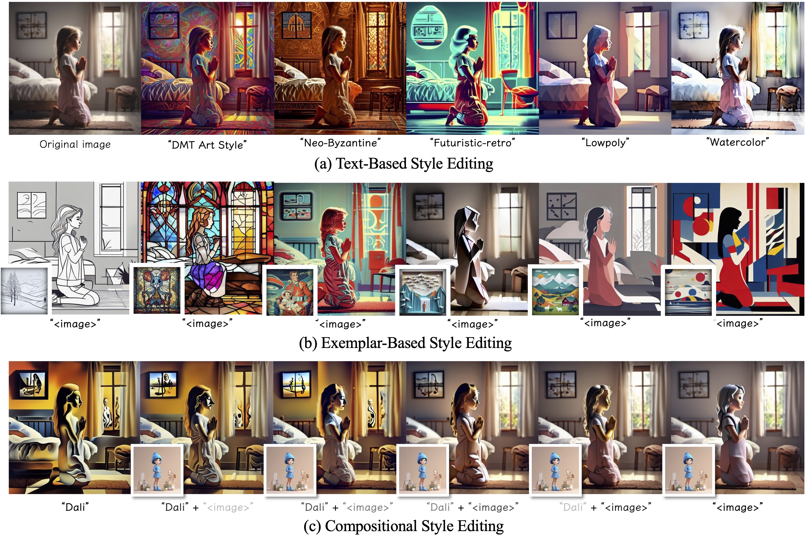
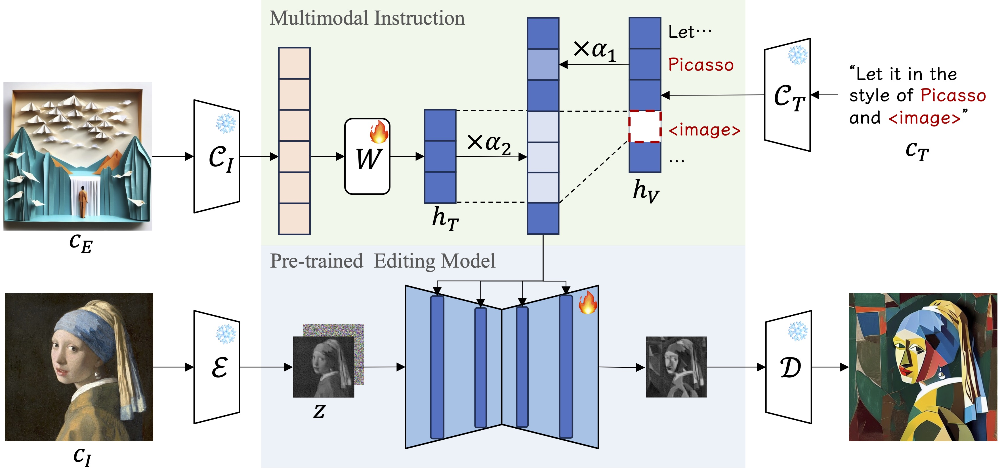
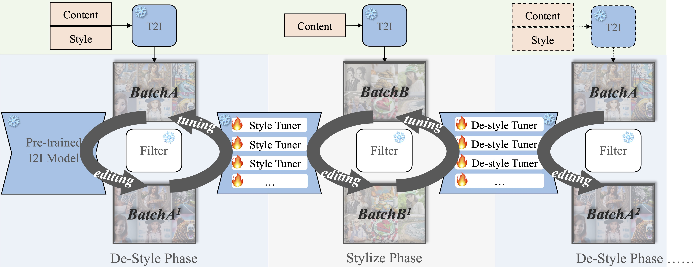
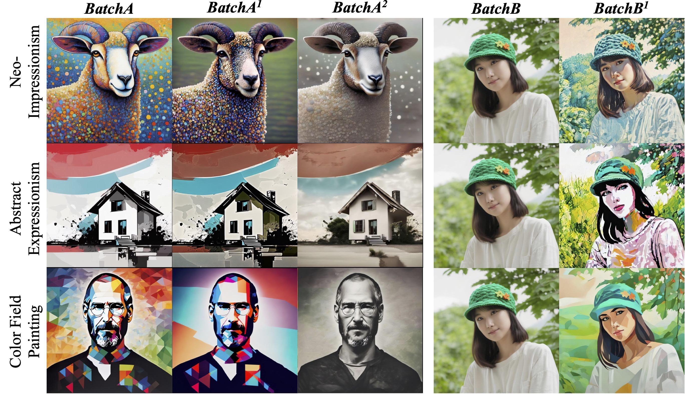
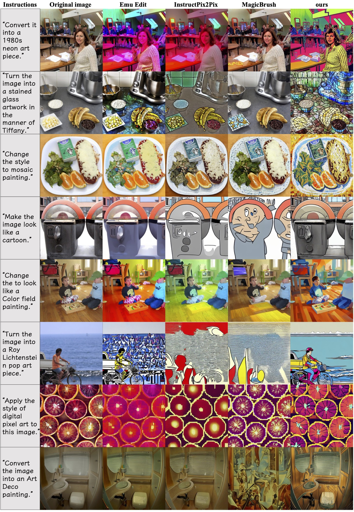
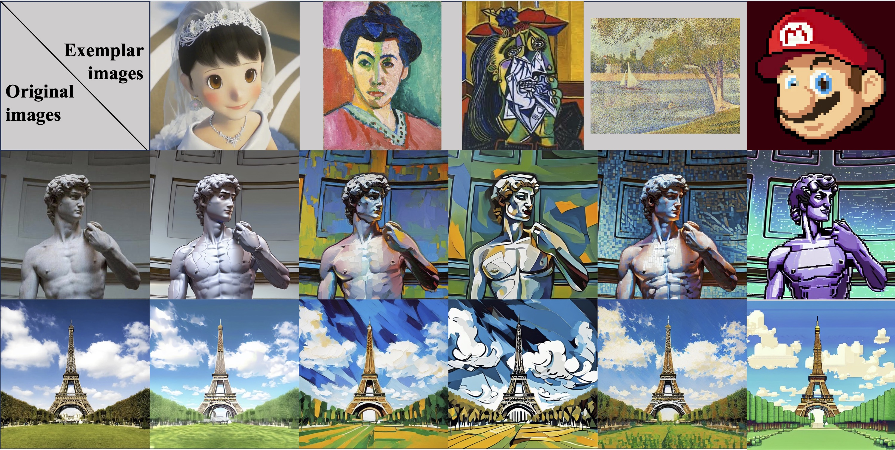
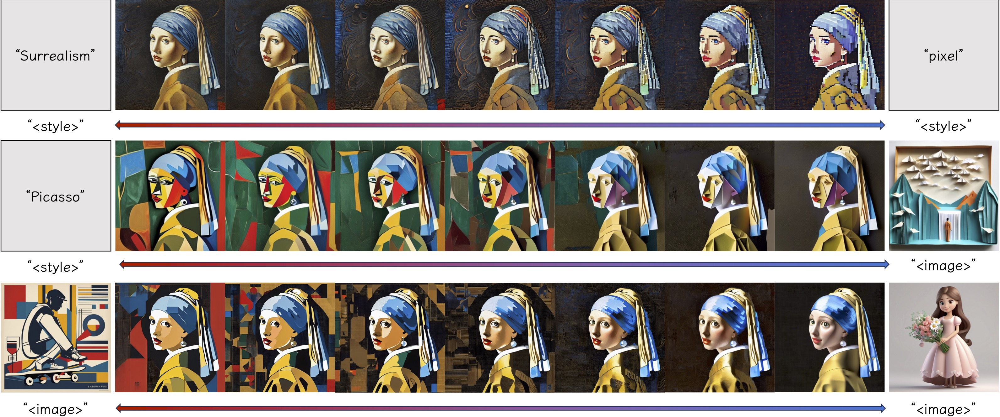
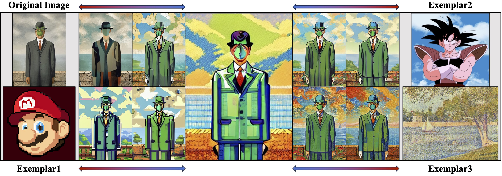

StyleBooth: Image Style Editing with Multimodal Instruction
StyleBooth is a unified style editing method supporting text-based, exemplar-based and compositional style editing.
[Paper] [Supp] [BibTeX] [Model] [Dataset] [Code Based on SCEPTER]
StyleBooth is a unified style editing method supporting text-based, exemplar-based and compositional style editing.
[Paper] [Supp] [BibTeX] [Model] [Dataset] [Code Based on SCEPTER]
Given an original image, image editing aims to generate an image that align with the provided instruction. The challenges are to accept multimodal inputs as instructions and a scarcity of high-quality training data, including crucial triplets of source/target image pairs and multimodal (text and image) instructions. In this paper, we focus on image style editing and present StyleBooth, a method that proposes a comprehensive framework for image editing and a feasible strategy for building a high-quality style editing dataset. We integrate encoded textual instruction and image exemplar as a unified condition for diffusion model, enabling the editing of original image following multimodal instructions. Furthermore, by iterative style-destyle tuning and editing and usability filtering, the StyleBooth dataset provides content-consistent stylized/plain image pairs in various categories of styles. To show the flexibility of StyleBooth, we conduct experiments on diverse tasks, such as textbased style editing, exemplar-based style editing and compositional style editing. The results demonstrate that the quality and variety of training data significantly enhance the ability to preserve content and improve the overall quality of generated images in editing tasks.
We propose Multimodal Instruction, mapping the text input and exemplar image input into a same hidden space through a trainable matrix, which unifies vision and text instructions. The textual instruction templates are carefully designed, introducing undetermined identifiers like "<style>" and "<image>" to support multimodal inputs. To balance every style for compositional style editing, we conduct Scale Weights Mechanism on the hidden space embeddings. Editing is guided by multimodal features following the compositional instructions from different modalities at the same time.
Iterative Style-Destyle Tuning and Editing pipeline. Following a de-style editing, filtering, style tuning, stylize editing, filtering and de-style tuning steps, Iterative Style-Destyle Tuning and Editing leverages the image quality and usability.
Generation samples of the intermediate and final image pairs in Iterative Style-Destyle Tuning and Editing. As the iteration process, image quality gets higher while key style features are gradually wiped off in the de-styled images. We show the style images and de-style results generated in 1st and 2nd de-styled phase and a plain image and results generated in 1st style phase.
Comparisons with instruction-based style editing baselines in Emu Edit benchmark. We show editing results of StyleBooth and 3 baselines. The results of StyleBooth are the most accurate in both style conveying and content preservation comparing to others, though some of the styles and instruction syntax are not contained in our tuning dataset.
Exemplar-based style editing with real world images. We present the results of 2 original images in the styles of 5 different art works. We use two original images: the David by Michelangelo and the Eiffel Tower, five style exemplars: an animate film stage photo, a Fauvism painting by Henri Matisse, a Cubism painting by Pablo Ruiz Picasso, a post-Impressionist painting by Georges Seurat and a pixel game character.
StyleBooth unifies textual and visual exemplar by mapping them into a same hid- den space making it possible to adjust the proportion of different styles in different modalities.
Compositional style editing combining 3 different styles. Both original image and the style exemplars are real world images. The art work "The Son of Man" by Rene Magritte is used as the original image and 3 exemplar images in different style are provided.
@InProceedings{Han_2025_ICCV,
title={StyleBooth: Image Style Editing with Multimodal Instruction},
author={Han, Zhen and Mao, Chaojie and Jiang, Zeyinzi and Pan, Yulin and Zhang, Jingfeng},
booktitle={Proceedings of the IEEE/CVF International Conference on Computer Vision (ICCV) Workshops},
year={2025,
pages={1947-1957}
}